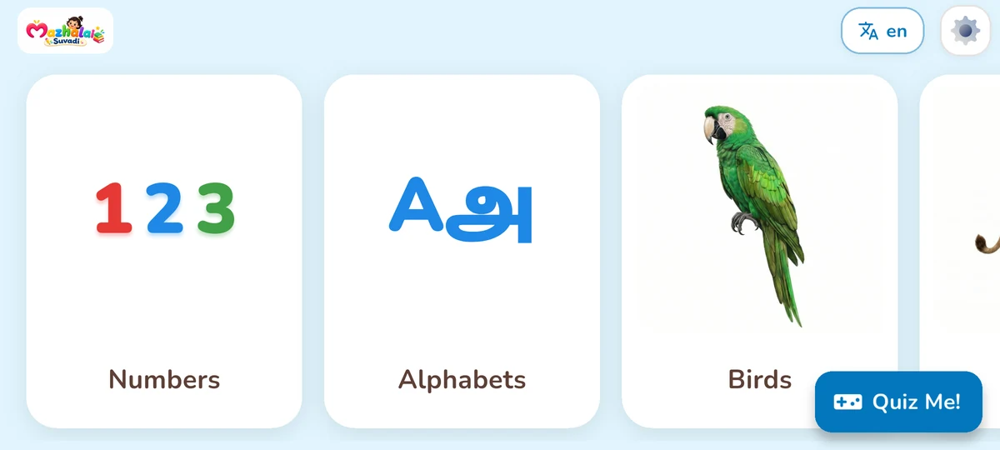
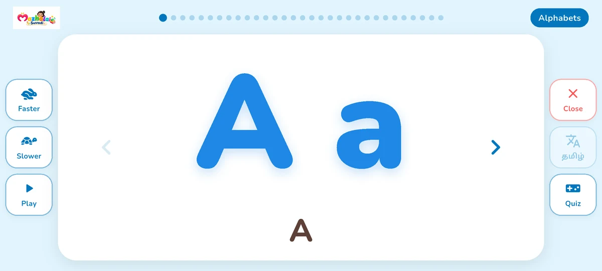
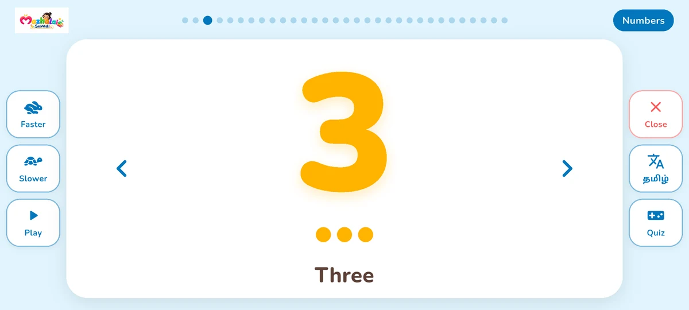
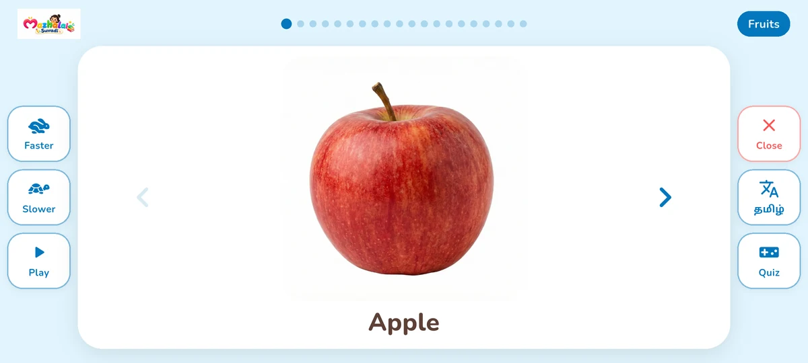
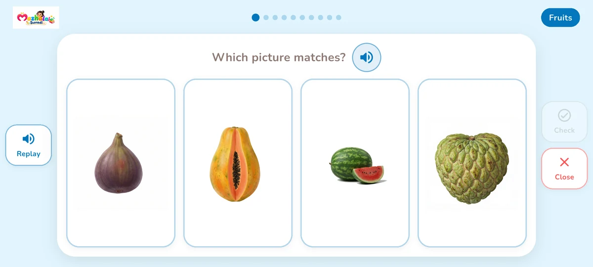

For little learners & their grown-ups
Little words.
Big discoveries.
A joyful start to Tamil and English. Mazhalai Suvadi—Suvadi for short—helps little ones see a picture, hear a word and discover something new.
Android · Preschool learning for ages 2–6

அ · A Look. Listen. Learn.Small discoveries, every day
A picture. A word.
A moment of wonder.
Simple, visual learning that makes room for curiosity. Sit together, repeat a favorite word or let your child explore at their own pace.
See it. Hear it. Say it.
Explore colorful picture cards and listen to spoken words. Tap to hear again, move between cards or use automatic playback.
From அ to A.
Switch between Tamil and English. Discover alphabets with example words, numbers, shapes and colors.
A little quiz. A little play.
Try picture recognition and listening questions, with visual feedback after each answer. Quizzes use the learning content available on your device.
Take a peek
Their first words, in two languages.
Large pictures, clear audio and simple landscape screens keep the learning experience easy to explore.




A world of first discoveries
Eighteen topics. So much to notice.
Start with letters and numbers. Keep going with the things children see around them—and a few things beyond.
- Alphabets
- Numbers
- Shapes
- Colors
- Animals
- Birds
- Fruits
- Vegetables
- Flowers
- Vehicles
- Body parts
- Everyday objects
- Professions
- School supplies
- Days
- Months
- Seasons
- Solar system
For the grown-ups
Little learners.
Parents in control.
- Choose a language.Explore in Tamil or English, and switch when you want to discover the other language.
- Pick a topic and learn together.Look at the picture, listen to its name and replay the words your child enjoys.
- Make the app feel right for you.The Parents Zone sits behind a maths question. Choose the language and color theme, manage audio and downloaded topics.
Good to know
Questions from grown-ups.
Who is Suvadi for?
Suvadi is designed for preschool children aged 2–6. Parents can join in to repeat words, listen together and make learning part of everyday life.
Does it teach both Tamil and English?
Yes. Picture cards, spoken words and alphabet content can be explored in Tamil and English. The app lets you switch languages.
Does learning need an internet connection?
Additional topic pictures and audio need an internet connection to download. After downloading, that content can be used offline.
Where are the parent settings?
Open the Parents Zone and answer the maths question. You can choose the language and color theme, turn audio on or off, and manage downloaded topics.
Make room for a small discovery.
A first letter. A familiar animal. A word to say together.